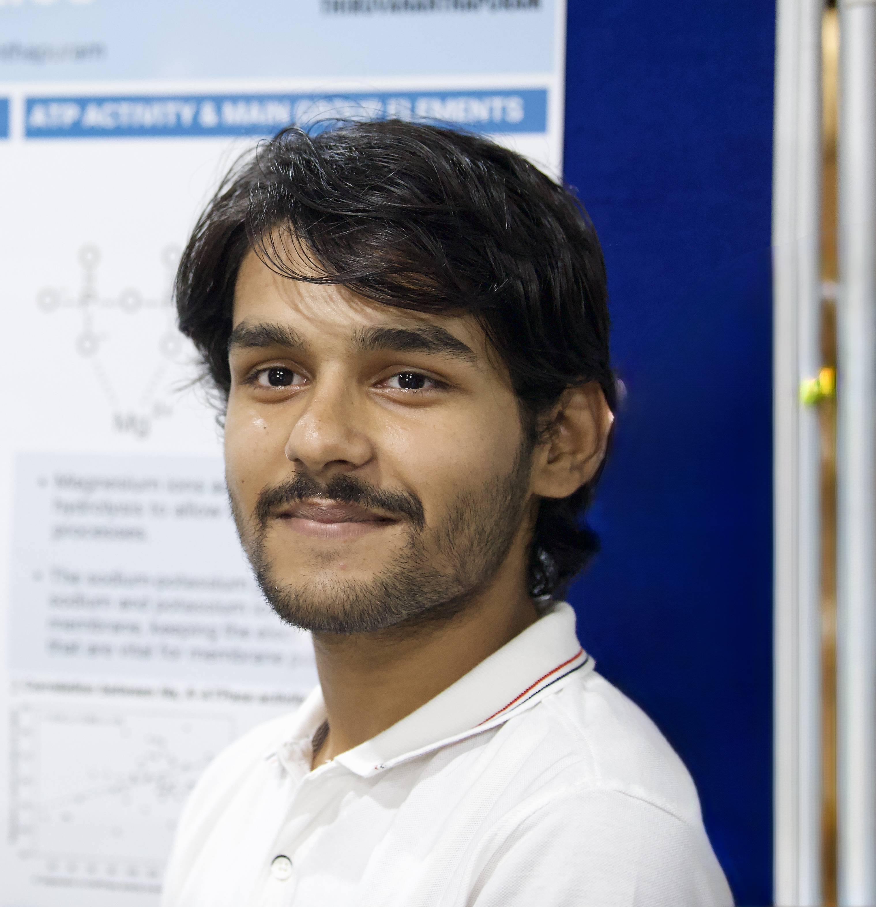

The Mathematics of Memory: Modeling Synaptic Strengths
An exploration of how differential equations and chemical kinetics can help us model long-term potentiation in the mammalian hippocampus.
I am an undergraduate student in biological sciences, working at the interface of computation, neurobiology, and complex systems. I spend my time writing code to simulate cellular mechanisms, building mathematical models of synaptic plasticity, and exploring how networks of simple nodes can yield intelligent behaviors.
Beyond the lab, I am an avid trail and marathon runner. I find a deep connection between the physiological boundaries tested in long-distance running and the complex homeostatic systems I study. Whether analyzing DNA sequences or pacing a tempo run, I seek elegance in systems that adapt and endure.
This space serves as my digital ledger—a field notebook where my research interests, computational side projects, and film photographs converge. I prefer deep focus, structured books, quiet libraries, and clean engineering.

Analyzing cellular behaviors, biochemical scaling, and neural spike dynamics as emergent complex systems.
Writing simulations, cache-optimizing alignment kernels, and developing WebGL botanical grows.
Testing metabolic thresholds, cellular fatigue curves, and pacing 70+ km weekly run cycles.
Capturing spatial compositions, architectural rules, and biological lattices on silver halide film.
An interactive numerical solver for the Hodgkin-Huxley equations, modeling action potentials and synaptic integration in small cortical circuits.
A low-level C++ refactoring of local and global sequence alignment kernels, utilizing CPU cache optimizations for large-scale genome analysis.
A WebGL particle system simulating structural botanical growths and branching networks using L-System grammar rules and noise algorithms.
Simulated microbial chemotaxis in structured environments using custom stochastic numerical solvers.
Guided students in programming ordinary differential equations and chemical kinetic models in Python.
An exploration of how differential equations and chemical kinetics can help us model long-term potentiation in the mammalian hippocampus.
A philosophical and mathematical bridge between thermodynamic entropy, Shannon information, and biological self-organization.
Analyzing the metabolic transition states during prolonged endurance runs, from glycogen depletion to central nervous system fatigue.
[ Ready for summary widgets: height='160' & latest activity feed widgets: height='454' ]
<!-- Place your Strava iframe widgets here later -->
<iframe height='160' width='300' frameborder='0' src='https://www.strava.com/athletes/.../activity-summary/...' />